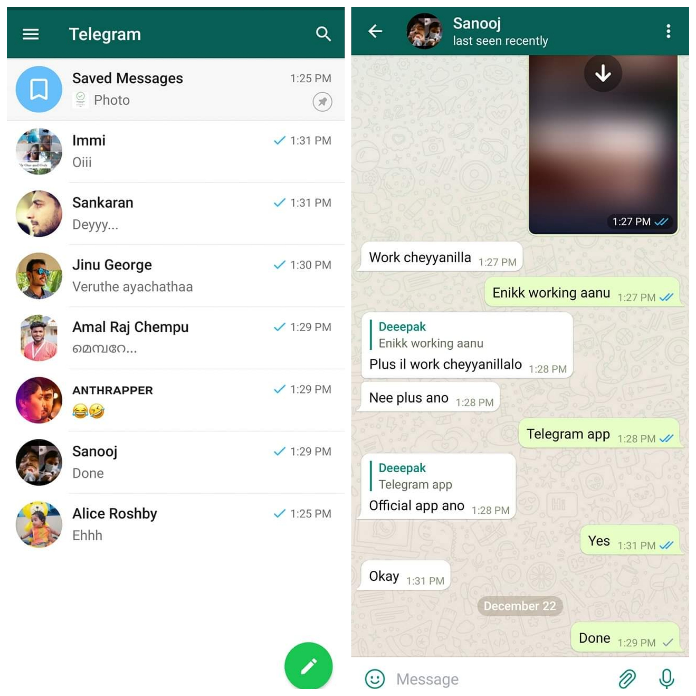

WhatsApp vs Telegram
ഇങ്ങനെയൊരു താരതമ്യം വരുമ്പോൾ തന്നെ ആളുകളെ വളരെയധികം തെറ്റിദ്ധരിപ്പിക്കുന്ന ഒരു ആരോപണമാണ് "ടെലഗ്രാം complicated ആണ്, user ഫ്രണ്ട്ലി അല്ല" എന്നൊക്കെയുള്ള കമന്റുകൾ.
എന്താണ് ഇതിലെ സത്യാവസ്ഥ? ടെലഗ്രാം complicated ആണോ? സാധാരണക്കാരന് മനസ്സിലാവാത്ത User Interface (UI) ആണോ അതിൽ ഉള്ളത്?
അല്ല എന്നാണ് ഉത്തരം. വാട്സാപ്പ് ഉപയോഗിക്കുമ്പോൾ കിട്ടുന്ന ഏതാണ്ട് അതേ UI തന്നെയാണ് ഒരു basic ടെലഗ്രാം user ക്കും ലഭിക്കുക. (പോസ്റ്റിൽ ചേർത്ത സ്ക്രീൻഷോട്ടുകൾ കാണുക)

അപ്പോൾ എവിടെയാണ് complication (സങ്കീർണ്ണത)?
നമുക്കറിയാം, ടെലഗ്രാമിൽ ചാനലുകൾ, ബോട്ടുകൾ, ഗ്രൂപ്പുകൾ തുടങ്ങി ഒരുപാട് categories of chats ഉണ്ട്. ഒരു user ഇതൊക്കെ explore ചെയ്യാൻ തുടങ്ങുമ്പോൾ മുതൽ ഇക്കാര്യങ്ങൾ ഒക്കെ പൂർണ്ണമായും മനസ്സിലാക്കുന്നത് വരെയുള്ള time period ആണ് അയാൾക്ക് complication തോന്നുന്നത്.
അതായത്, വാട്സാപ്പിലെ പോലെ ചാറ്റ് ചെയ്യാനും ഫയലുകൾ share ചെയ്യാനും മാത്രമായി ടെലഗ്രാം ഉപയോഗിക്കുന്ന ഒരു വ്യക്തിക്ക് യാതൊരു സങ്കീർണ്ണതയും ഇല്ലാത്ത, വാട്സാപ്പിനേക്കാൾ ധാരാളം ചാറ്റിങ് ഫീച്ചറുകൾ ഉള്ള ഒരു normal instant messenger ആണ് ടെലഗ്രാം.
കണ്ണിൽ കണ്ട ചാനലുകളിലും ഗ്രൂപ്പുകളിലും ബോട്ടുകളിലും ഒക്കെ join ചെയ്തിട്ട് Home screen ആകെ കുഴഞ്ഞു മറിഞ്ഞു കിടക്കുമ്പോൾ അതു നോക്കി "ടെലഗ്രാം complicated ആണേ.." എന്നു പറഞ്ഞിട്ട് എന്തു കാര്യം?
Btw, ടെലഗ്രാമിൽ വരുന്ന മെസ്സേജുകളുടെ നോട്ടിഫിക്കേഷൻ ശല്ല്യം ആണെന്ന് പറയുന്ന ആളുകൾ ഒരുപാട് ഉണ്ട്. നമ്മുക്ക് personal chats മാത്രം നോട്ടിഫിക്കേഷൻ കിട്ടുന്ന വിധത്തിൽ ബാക്കി ഉള്ള groups channels bots ഒക്കെ ഓഫാക്കി ഇടാൻ പറ്റും. & Home screen കുഴഞ്ഞു മറിഞ്ഞു കിടക്കുന്നത് ഒഴിവാക്കാൻ ഓരോന്നായി folder ചെയ്തു വെക്കാനും ആവശ്യം ഇല്ലാത്തവ archive ചെയ്യാനും പറ്റും.
PS: മുകളിൽ ഉള്ള സ്ക്രീൻഷോട്ടിൽ കാണുന്ന തീം ഇൻസ്റ്റാൾ ചെയ്യാൻ
👉 ഇവിടെ ക്ലിക്ക് ചെയ്യുക.
Related articles:
• ടെലഗ്രാമിനെപ്പറ്റി കൂടുതൽ വായിക്കാം...